토목기사 (2018-08-19 기출문제)
1과목: 응용역학
1. 상ㆍ하단이 고정인 기둥에 그림과 같이 힘 P가 작용한다면 반력 RA, RB 값은?
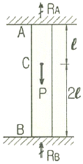
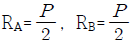
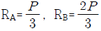
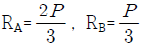
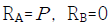
(정답률: 68%)

2. 그림과 같이 2개의 집중하중이 단순보 위를 통과할 때 절대최대 휨모멘트의 크기(Mmax)와 발생위치(x)는?
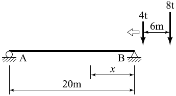
- Mmax=36.2tㆍm, x=8m
- Mmax=38.2tㆍm, x=8m
- Mmax=48.6tㆍm, x=9m
- Mmax=50.6tㆍm, x=9m
(정답률: 76%)
3. 단면 2차 모멘트가 I이고 길이가 ℓ인 균일한 단면의 직선상(直線狀)의 기둥이 있다. 지지상태가 1단 고정, 1단 자유인 경우 오일러(Euler) 좌굴하중(Pcr)은? (단, 이 기둥의 영(Young)계수는 E이다.)
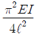
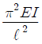
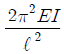
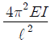
(정답률: 62%)
4. 부양력 200kg인 기구가 수평선과 60°의 각으로 정지상태에 있을 때 기구의 끈에 작용하는 인장력(T)과 풍압(w)을 구하면?
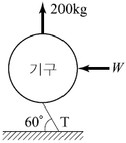
- T=220.94kg, w=1⑤.47kg
- T=230.94kg, w=115.47kg
- T=220.94Kg, w=125.47kg
- T=230.94kg, w=135.47kg
(정답률: 77%)
5. 그림과 같이 지름 d인 원형단면에서 최대 단면계수를 갖는 직사각형 단면을 얻으려면 b/h는?
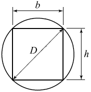
- 1
- 1/2
- 1/√2
- 1/√3
(정답률: 64%)
6. 그림과 같은 구조물에서 C점의 수직처짐을 구하면? (단, EI = 2×109kgㆍcm2 이며 자중은 무시한다.)
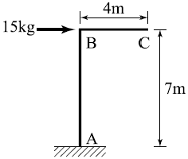
- 2.70mm
- 3.57mm
- 6.24mm
- 7.35mm
(정답률: 60%)
7. 다음 인장부재의 수직변위를 구하는 식으로 옳은 것은? (단, 탄성계수는 E)
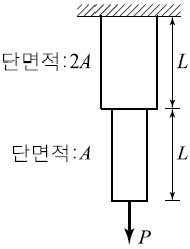
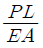
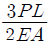
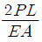
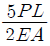
(정답률: 71%)
8. 그림과 같이 속이 빈 직사각형 단면의 최대 전단응력은? (단, 전단력은 2t)
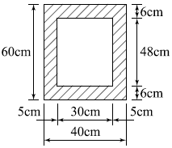
- 2.125kg/cm2
- 3.22kg/cm2
- 4.125kg/cm2
- 4.22kg/cm2
(정답률: 64%)
9. 아래 그림과 같은 캔틸레버보에 굽힘으로 인하여 저장 된 변형 에너지는? (단, EI는 일정하다)
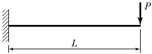
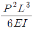
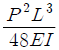
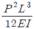
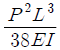
(정답률: 66%)
10. 다음 그림과 같은 T형 단면에서 x-x축에 대한 회전반지름(r)은?
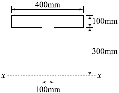
- 227mm
- 289mm
- 334mm
- 376mm
(정답률: 53%)
11. 다음 내민보에서 B점의 모멘트와 C점의 모멘트의 절대값의 크기를 같게 하기 위한 L/a의 값을 구하면?
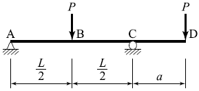
- 6
- 4.5
- 4
- 3
(정답률: 56%)
12. 어떤 재료의 탄성계수를 E, 전단 탄성계수를 G라 할때 G와 E의 관계식으로 옳은 것은? (단, 이 재료의 프와송비는 ν이다.)
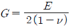
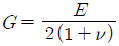
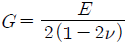
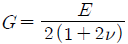
(정답률: 68%)
13. 다음 트러스의 부재력이 0인 부재는?
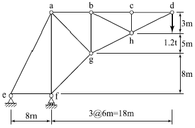
- 부재 a-e
- 부재 a-f
- 부재 b-g
- 부재 c-h
(정답률: 73%)
14. 다음 구조물은 몇 부정정 차수인가?
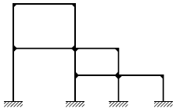
- 12차 부정정
- 15차 부정정
- 18차 부정정
- 21차 부정정
(정답률: 65%)
15. 그림과 같은 라멘 구조물의 E점에서의 불균형 모멘트에 대한 부재 EA의 모멘트 분배율은?
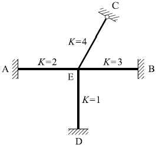
- 0.222
- 0.1667
- 0.2857
- 0.40
(정답률: 77%)
16. 그림과 같은 내민보에서 정(+)의 최대휨모멘트가 발생하는 위치 x(지점 A로부터의 거리)와 정(+)의 최대휨모멘트(Mx)는?
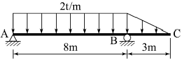
- x=2.821m, Mx=11.438tㆍm
- x=3.256m, Mx=17.547tㆍm
- x=3.813m, Mx=14.535tㆍm
- x=4.527m, Mx=19.063tㆍm
(정답률: 56%)
17. 다음 그림과 같은 반원형 3힌지 아치에서 A점의 수평 반력은?
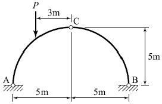
- P
- P/2
- P/4
- P/5
(정답률: 69%)
18. 휨 모멘트가 M인 다음과 같은 직사각형 단면에서 A- A에서의 휨응력은?
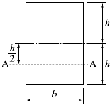
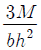
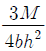
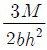
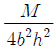
(정답률: 53%)
19. 다음 그림과 같은 내민보에서 C점의 처짐은? (단, 전 구간의 EI=3.0×109 kgㆍcm2으로 일정하다.)
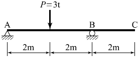
- 0.1cm
- 0.2cm
- 1cm
- 2cm
(정답률: 52%)
20. 아래 그림에서 블록 A를 뽑아내는 데 필요한 힘 P는 최소 얼마 이상이어야 하는가? (단, 블록과 접촉면과의 마찰계수 μ=0.3)
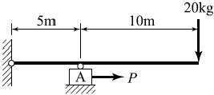
- 6kg
- 9kg
- 15kg
- 18kg
(정답률: 64%)
2과목: 측량학
21. 트래버스 ABCD에서 각 측선에 대한 위거와 경거 값이 아래 표와 같을 때, 측선 BC의 배횡거는?
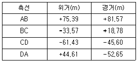
- 81.57m
- 155.10m
- 163.14m
- 181.92m
(정답률: 72%)
22. DGPS를 적용할 경우 기지점과 미지점에서 측정한 결과로부터 공통오차를 상쇄시킬 수 있기 때문에 측량의 정확도를 높일 수 있다. 이때 상쇄되는 오차요인이 아닌것은?
- 위성의 궤도정보오차
- 다중경로오차
- 전리충 신호지연
- 대류권 신호지연
(정답률: 51%)
23. 사진축척이 1:5000 이고 종중복도가 60% 일 때 촬영기선의 길이는? (단, 사진크기는 23cm×23cm이다.)
- 360m
- 375m
- 435m
- 460m
(정답률: 57%)
24. 완화곡선에 대한 설명으로 옳지 않은 것은?
- 모든 클로소이드(clothoid)는 닮음 꼴이며 클로소이드 요소는 길이의 단위를 가진 것과 단위가 없는 것이 있다.
- 완화곡선의 접선은 시점에서 원호에, 종점에서 직선에 접한다.
- 완화곡선의 반지름은 그 시점에서 무한대, 종점에서는 원곡선의 반지름과 같다.
- 완화곡선에 연한 곡선반지름의 감소율은 캔트(cant)의 증가율과 같다.
(정답률: 76%)
25. 삼변측량에 관한 설명 중 틀린 것은?
- 관측요소는 변의 길이 뿐이다.
- 관측값에 비하여 조건식이 적은 단점이 있다.
- 삼각형의 내각을 구하기 위해 cosine 제2법칙을 이용한다.
- 반각공식을 이용하여 각으로부터 변을 구하여 수직위치를 구한다.
(정답률: 55%)
26. 교호수준측량에서 A점의 표고가 55.00m이고 a1=1.34m, b1=1.14m, a2=0.84m, b2=0.56m일 때 B점의 표고는?
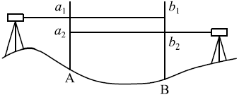
- 55.24m
- 56.48m
- 55.22m
- 56.42m
(정답률: 63%)
27. 하천측량 시 무제부에서의 평면측량 범위는?
- 홍수가 영향을 주는 구역보다 약간 넓게
- 계획하고자 하는 지역의 전체
- 홍수가 영향을 주는 구역까지
- 홍수영향 구역보다 약간 좁게
(정답률: 71%)
28. 어떤 거리를 10회 관측하여 평균 2403.557m의 값을 얻고 잔차의 제곱의 합 8208mm2을 얻었다면 1회 관측의 평균 제곱근 오차는?
- ±23.7mm
- ±25.5mm
- ±28.3mm
- ±30.2mm
(정답률: 28%)
29. 지반고(hA)가 123.6m인 A점에 토털스테이션을 설치하여 B점의 프리즘을 관측하여, 기계고 1.5m, 관측사거리(S) 150m, 수평선으로부터의 고저각(α) 30°, 프리즘고(Ph) 1.5m를 얻었다면 B점의 지반고는?
- 198.0m
- 198.3m
- 198.6m
- 198.9m
(정답률: 61%)
30. 측량성과표에 측점A의 진북방향각은 0°06′17″이고, 측점A에서 측점B에 대한 평균방향각은 263°38′26″로 되어 있을 때에 측점A에서 측점B에 대한 역방위각은?
- 83°32′09″
- 83°44′43″
- 263°32′09″
- 263°44′43″
(정답률: 45%)
31. 수심이 h인 하천의 평균 유속을 구하기 위하여 수면으로부터 0.2h, 0.6h, 0.8h가 되는 깊이에서 유속을 측량한 결과 0.8m/s, 1.5m/s, 1.0m/s이었다. 3점법에 의한 평균 유속은?
- 0.9m/s
- 1.0m/s
- 1.1m/s
- 1.2m/s
(정답률: 70%)
32. 위성에 의한 원격탐사(Remote Sensing)의 특징으로 옳지 않은 것은?
- 항공사진측량이나 지상측량에 비해 넓은 지역의 동시측량이 가능하다.
- 동일 대상물에 대해 반복측량이 가능하다.
- 항공사진측량을 통해 지도를 제작하는 경우보다 대축척 지도의 제작에 적합하다.
- 여러 가지 분광 파장대에 대한 측량자료 수집이 가능하므로 다양한 주제도 작성이 용이하다.
(정답률: 56%)
33. 교각이 60°이고 반지름이 300m인 원곡선을 설치할때 접선의 길이(T.L.)는?
- 81.603m
- 173.2⑤m
- 346.412m
- 519.615m
(정답률: 68%)
34. 지상 1km2의 면적을 지도상에서 4cm2으로 표시하기위한 축척으로 옳은 것은?
- 1:5000
- 1:50000
- 1:25000
- 1:250000
(정답률: 44%)
35. 수준측량에서 레벨의 조정이 불완전하여 시준선이 기포관축과 평행하지 않을 때 생기는 오차의 소거 방법으로 옳은 것은?
- 정위, 반위로 측정하여 평균한다.
- 지반이 견고한 곳에 표척을 세운다.
- 전시와 후시의 시준거리를 같게 한다.
- 시작점과 종점에서의 표척을 같은 것을 사용한다.
(정답률: 73%)
36. ΔABC의 꼭지점에 대한 좌표값이 (30,50), (20,90), (60,100)일 때 삼각형 토지의 면적은? (단, 좌표의 단위: m)
- 500m2
- 750m2
- 850m2
- 960m2
(정답률: 55%)
37. GNSS 상대측위 방법에 대한 설명으로 옳은 것은?
- 수신기 1대만을 사용하여 측위를 실시한다.
- 위성과 수신기 간의 거리는 전파의 파장 개수를 이용하여 계산할 수 있다.
- 위상차의 계산은 단순차, 2중차, 3중차와 같은 차분기법으로는 해결하기 어렵다.
- 전파의 위상차를 관측하는 방식이나 절대측위 방법보다 정확도가 낮다.
(정답률: 57%)
38. 노선 측량의 일반적인 작업 순서로 옳은 것은?
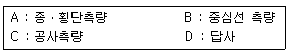
- A→B→D→C
- D→B→A→C
- D→C→A→B
- A→C→D→B
(정답률: 73%)
39. 삼각형의 토지면적을 구하기 위해 밑변 a와 높이 h를 구하였다. 토지의 면적과 표준오차는? (단, a=15±0.015m, h=25±0.025m)
- 187.5±0.04m2
- 187.5±0.27m2
- 375.0±0.27m2
- 375.0±0.53m2
(정답률: 58%)
40. 축척 1:5000 수치지형도의 주곡선 간격으로 옳은 것은?
- 5m
- 10m
- 15m
- 20m
(정답률: 62%)
3과목: 수리학 및 수문학
41. 유속이 3m/s인 유수 중에 유선형 물체가 흐름방향으로 향하여 h=3m 깊이에 놓여 있을 때 정체압력(stagnation pressure)은?
- 0.46kN/m2
- 12.21kN/m2
- 33.90kN/m2
- 102.35kN/m2
(정답률: 39%)
42. 다음 중 직접 유출량에 포함되는 것은?
- 지체지표하 유출량
- 지하수 유출량
- 기저 유출량
- 조기지표하 유출량
(정답률: 44%)
43. 직사각형 단면수로의 폭이 5m이고 한계수심이 1m일 때의 유량은? (단, 에너지 보정계수 α=1.0)
- 15.65m3/s
- 10.75m3/s
- 9.80m3/s
- 3.13m3/s
(정답률: 50%)
44. 표와 같은 집중호우가 자기기록지에 기록되었다. 지속기간 20분 동안의 최대강우강도는?
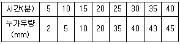
- 95mm/hr
- 1⑤mm/hr
- 115mm/hr
- 135mm/hr
(정답률: 64%)
45. 단위유량도 이론의 가정에 대한 설명으로 옳지 않은 것은?
- 초과강우는 유효지속시간 동안에 일정한 강도를 가진다.
- 초과강우는 전 유역에 걸쳐서 균등하게 분포된다.
- 주어진 지속기간의 초과강우로부터 발생된 직접유출 수문곡선의 기저시간은 일정하다.
- 동일한 기저시간을 가진 모든 직접유출 수문곡선의 종거들은 각 수문곡선에 의하여 주어진 총 직접유출수문 곡선에 반비례한다.
(정답률: 43%)
46. 사각 위어에서 유량산출에 쓰이는 Francis 공식에 대하여 양단 수축이 있는 경우에 유량으로 옳은 것은? (단, B : 위어 폭, h : 월류수심)
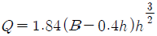
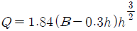
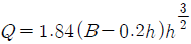
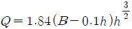
(정답률: 62%)
47. 비에너지(specific energy)와 한계수심에 대한 설명으로 옳지 않은 것은?
- 비에너지는 수로의 바닥을 기준으로 한 단위무게의 유수가 가진 에너지이다.
- 유량이 일정할 때 비에너지가 최소가 되는 수심이 한계수심이다.
- 비에너지가 일정할 때 한계수심으로 흐르면 유량이 최소가 된다.
- 직사각형 단면에서 한계수심은 비에너지의 2/3가 된다.
(정답률: 60%)
48. 관수로의 마찰손실공식 중 난류에서의 마찰손실계수 f는?
- 상대조도만의 함수이다.
- 레이놀즈수와 상대조도의 함수이다.
- 후르드수와 상대조도의 함수이다.
- 레이놀즈수만의 함수이다.
(정답률: 56%)
49. 우물에서 장기간 양수를 한 후에도 수면강하가 일어나지 않는 지점까지의 우물로부터 거리(범위)를 무엇이라 하는가?
- 용수효율권
- 대수층권
- 수류영역권
- 영향권
(정답률: 64%)
50. 빙산(氷山)의 부피가 V, 비중이 0.92이고, 바닷물의 비중은 1.025라 할 때 바닷물 속에 잠겨있는 빙산의 부피는?
- 1.1V
- 0.9V
- 0.8V
- 0.7V
(정답률: 65%)
51. 지름 d인 구(球)가 밀도 ρ의 유체 속을 유속 V로 침강할 때 구의 항력 D는? (단, 항력계수는 CD라 한다.)
(정답률: 51%)
52. 수리실험에서 점성력이 지배적인 힘이 될 때 사용할 수 있는 모형법칙은?
- Reynolds 모형법칙
- Froude 모형법칙
- Weber 모형법칙
- Cauchy 모형법칙
(정답률: 56%)
53. 개수로의 상류(subcritical flow)에 대한 설명으로 옳은 것은?(오류 신고가 접수된 문제입니다. 반드시 정답과 해설을 확인하시기 바랍니다.)
- 유속과 수심이 일정한 흐름
- 수심이 한계수심보다 작은 흐름
- 유속이 한계유속보다 작은 흐름
- Froud수가 1보다 큰 흐름
(정답률: 49%)
54. 그림과 같이 높이 2m인 물통에 물이 1.5m만큼 담겨져 있다. 물통이 수평으로 4.9m/s2의 일정한 가속도를 받고 있을 때, 물통의 물이 넘쳐흐르지 않기 위한 물통의 길이(L)는?
- 2.0m
- 2.4m
- 2.8m
- 3.0m
(정답률: 40%)
55. 미소진폭파(small-amplitude wave)이론에 포함된 가정이 아닌 것은?
- 파장이 수심에 비해 매우 크다.
- 유체는 비압축성이다.
- 바닥은 평평한 불투수층이다.
- 파고는 수심에 비해 매우 작다.
(정답률: 49%)
56. 관수로에 대한 설명 중 틀린 것은?
- 단면 점확대로 인한 수두손실은 단면 급확대로 인한 수두손실보다 클 수 있다.
- 관수로 내의 마찰손실수두는 유속수두에 비례한다.
- 아주 긴 관수로에서는 마찰 이외의 손실수두를 무시할 수 있다.
- 마찰손실수두는 모든 손실수두 가운데 가장 큰 것으로 마찰손실계수에 유속수두를 곱한 것과 같다.
(정답률: 45%)
57. 수문자료의 해석에 사용되는 확률분포형의 매개변수를 추정하는 방법이 아닌 것은?
- 모멘트법(method of moments)
- 회선적분법(convolution integral method)
- 확률가중모멘트법(method of probability weighted moments)
- 최우도법(method of maximum likelihood)
(정답률: 44%)
58. 에너지선에 대한 설명으로 옳은 것은?
- 언제나 수평선이 된다.
- 동수경사선보다 아래에 있다.
- 속도수두와 위치수두의 합을 의미한다.
- 동수경사선보다 속도수두만큼 위에 위치하게 된다.
(정답률: 60%)
59. 대기의 온도 t1, 상대습도 70%인 상태에서 증발이 진행되었다. 온도가 t2로 상승하고 대기 중의 증기압이 20% 증가하였다면 온도 t1 및 t2에서의 포화 증기압이 각각 10.0mHg 및 14.0mmHg라 할 때 온도 t2에서의 상대습도는?
- 50%
- 60%
- 70%
- 80%
(정답률: 42%)
60. 다음 물리량 중에서 차원이 잘못 표시된 것은?
- 동점성계수: [EL2T]
- 밀도:[FL-4T2]
- 전단응력:[FL-2]
- 표면장력:[FL-1]
(정답률: 54%)
4과목: 철근콘크리트 및 강구조
61. 그림과 같은 나선철근단주의 설계축강도(Pn)을 구하면? (단, D32 1개의 단면적=794mm2, fck=24MPa, fy=420MPa)
- 2648kN
- 3254kN
- 3797kN
- 3972kN
(정답률: 49%)
62. 그림에 나타난 직사각형 단철근 보의 설계휨강도(øMn)를 구하기 위한 강도감소계수(ø)는 얼마인가? (단, fck=28MPa, fy=400MPa)
- 0.85
- 0.82
- 0.79
- 0.76
(정답률: 55%)
63. 옹벽의 구조해석에 대한 설명으로 틀린 것은?
- 저판의 뒷굽판은 정확한 방법이 사용되지 않는 한, 뒷굽판 상부에 재하되는 모든 하중을 지지하도록 설계하여야 한다.
- 부벽식 옹벽의 전면벽은 저판에 지지된 캔틸레버로 설계하여야 한다.
- 부벽식 옹벽의 저판은 정밀한 해석이 사용되지 않는 한, 부벽 사이의 거리를 경간으로 가정한 고정보 또는 연속보로 설계할 수 있다.
- 뒷부벽은 T형보로 설계하여야 하며, 앞부벽은 직사각형보로 설계하여야 한다.
(정답률: 52%)
64. 강도설계법의 기본 가정을 설명한 것으로 틀린 것은?
- 철근과 콘크리트의 변형률은 중립축에서의 거리에 비례한다고 가정한다.
- 콘크리트 압축연단의 극한변형률은 0.003으로 가정한다.
- 철근의 응력이 설계기준항복강도(fy) 이상일 때 철근의 응력은 그 변형률에 Es를 곱한 값으로 한다,
- 콘크리트의 인장강도는 철근콘크리트의 휨계산에서 무시한다.
(정답률: 48%)
65. 길이가 7m인 양단 연속보에서 처짐을 계산하지 않는 경우 보의 최소두께로 옳은 것은? (단, fck=28MPa, fy=400MPa)
- 275mm
- 334mm
- 379mm
- 438mm
(정답률: 46%)
66. 계수 전단강도 Vu=60kN을 받을 수 있는 직사각형 단면이 최소전단철근 없이 견딜 수 있는 콘크리트의 유효깊이 d는 최소 얼마 이상이어야 하는가? (단, fck=24MPa, 단면의 폭(b)=350mm)
- 560mm
- 525mm
- 434mm
- 328mm
(정답률: 57%)
67. 전단철근에 대한 설명으로 틀린 것은?
- 철근콘크리트 부재의 경우 주인장 철근에 45° 이상의 각도로 설치되는 스터럽을 전단철근으로 사용할 수 있다.
- 철근콘크리트 부재의 경우 주인장 철근에 30° 이상의 각도로 구부린 굽힘철근을 전단철근으로 사용할 수 있다.
- 전단철근으로 사용하는 스터럽과 기타 철근 또는 철선은 콘크리트 압축연단부터 거리 d만큼 연장하여야 한다.
- 용접 이형철망을 사용할 경우 전단철근의 설계기준항복강도는 500MPa을 초과할 수 없다.
(정답률: 59%)
68. 비틀림철근에 대한 설명으로 틀린 것은? (단, Aoh는 가장 바깥의 비틀림 보강철근의 중심으로 닫혀진 단면적이고, Ph는 가장 바깥의 횡방향 폐쇄스터럽 중심선의 둘레이다.)
- 횡방향 비틀림철근은 종방향 철근 주위로 135° 표준갈고리에 의해 정착하여야 한다.
- 비틀림모멘트를 받는 속빈 단면에서 횡방향 비틀림철근의 중심선으로부터 내부 벽면까지의 거리는 0.5Aoh/Ph이상이 되도록 설계하여야 한다.
- 횡방향 비틀림철근의 간격은 Ph/6 및 400mm보다 작아야 한다.
- 종방향 비틀림철근은 양단에 정착하여야 한다.
(정답률: 62%)
69. 휨부재에서 철근의 정착에 대한 안전을 검토하여야 하는 곳으로 거리가 먼 것은?
- 최대 응력점
- 경간내에서 인장철근이 끝나는 곳
- 경간내에서 인장철근이 굽혀진 곳
- 집중하중이 재하되는 점
(정답률: 42%)
70. 다음 필렛용접의 전단응력은 얼마인가?(오류 신고가 접수된 문제입니다. 반드시 정답과 해설을 확인하시기 바랍니다.)
- 67.72MPa
- 70.72MPa
- 72.72MPa
- 75.72MPa
(정답률: 39%)
71. 단면이 400×500mm이고 150mm2의 PSC강선 4개를 단면 도심축에 배치한 프리텐션 PSC부재가 있다. 초기 프리스트레스가 10000MPa일 때 콘크리트의 탄성변형에 의한 프리스트레스 감소량의 값은? (단, n = 6)(오류 신고가 접수된 문제입니다. 반드시 정답과 해설을 확인하시기 바랍니다.)
- 22MPa
- 20MPa
- 18MPa
- 16MPa
(정답률: 49%)
72. 다음 그림과 같이 W=40kN/m 일 때 PS강재가 단면 중심에서 긴장되며 인장측의 콘크리트 응력이 “0”이 되려면 PS 강재에 얼마의 긴장력이 작용하여야 하는가?
- 46⑤kN
- 5000kN
- 5200kN
- 5625kN
(정답률: 64%)
73. 그림과 같은 직사각형 단면의 보에서 인장철근은 D22철근 3개가 윗부분에, D29철근 3개가 아랫부분에 2열로 배치되었다. 이 보의 공칭 휨강도(Mn)는? (단, 철근 D22 3본의 단면적은 1161mm2, 철근 D29 3본의 단면적은 1927mm2, fck=24MPa, fy=350MPa)
- 396.2kNㆍm
- 424.6kNㆍm
- 467.3kNㆍm
- 512.4kNㆍm
(정답률: 38%)
74. 프리스트레스트콘크리트의 원리를 설명할 수 있는 기본 개념으로 옳지 않은 것은?
- 균등질 보의 개념
- 내력 모멘트의 개념
- 하중평형의 개념
- 변형도 개념
(정답률: 62%)
75. 콘크리트의 강도설계법에서 fck=38MPa일 때 직사각형 응력분포의 깊이를 나타내는 β1의 값은 얼마인가?
- 0.78
- 0.92
- 0.80
- 0.75
(정답률: 60%)
76. 4번에 의해 지지되는 2방향 슬래브 중에서 1방향 슬래브로 보고 해석할 수 있는 경우에 대한 기준으로 옳은 것은? (단, L: 2방향 슬래브의 장경간, S: 2방향 슬래브의 단경 간)
- L/S가 2보다 클 때
- L/S가 1일 때
- L/S가 3/2이상일 때
- L/S가 3보다 작을 때
(정답률: 50%)
77. 폭 400mm, 유효깊이 600mm인 단철근 직사각형 보의 단면에서 콘크리트구조기준에 의한 최대 인장철근량은? (단, fck=28MPa, fy=400MPa)
- 4552mm2
- 4877mm2
- 5202mm2
- 5526mm2
(정답률: 38%)
78. 강판형(Plate girder) 복부(web) 두께의 제한이 규정되어 있는 가장 큰 이유는?
- 시공상의 난이
- 공비의 절약
- 자중의 경감
- 좌굴의 방지
(정답률: 67%)
79. 인장응력 검토를 위한 L-150×90×12인 형강(angle)의 전개 총폭(bg)은 얼마인가?
- 228mm
- 232mm
- 240mm
- 252mm
(정답률: 65%)
80. 깊은 보(deep beam)의 강도는 다음 중 무엇에 의해 지배되는가?
- 압축
- 인장
- 휨
- 전단
(정답률: 53%)
5과목: 토질 및 기초
81. 점성토를 다지면 함수비의 증가에 따라 입자의 배열이 달라진다. 최적함수비의 습윤측에서 다짐을 실시하면 흙은 어떤 구조로 되는가?
- 단립구조
- 봉소구조
- 이산구조
- 면모구조
(정답률: 58%)
82. 토질실험 결과 내부마찰각(ø)=30° 점착력 c=0.5kg/cm2, 간극수압이 8kg/cm2이고 파괴면에 작용하는 수직응력이 30kg/cm2일 때 이 흙의 전단응력은?
- 12.7kg/cm2
- 13.2kg/cm2
- 15.8kg/cm2
- 19.5kg/cm2
(정답률: 55%)
83. 다음 그림과 같은 점성토 지반의 굴착저면에서 바닥융기에 대한 안전율을 Terzaghi의 식에 의해 구하면? (단, γ=1.731t/m3, c=2.4t/m2 이다.)
- 3.21
- 2.32
- 1.64
- 1.17
(정답률: 38%)
84. 흙의 투수계수에 영향을 미치는 요소들로만 구성된 것은?
- ㉮, ㉯, ㉱, ㉳
- ㉮, ㉯, ㉰, ㉲, ㉳
- ㉮, ㉯, ㉱, ㉲, ㉴
- ㉯, ㉰, ㉲, ㉴
(정답률: 62%)
85. 흙의 다짐에 대한 일반적인 설명으로 틀린 것은?
- 다진 흙의 최대건조밀도와 최적함수비는 어떻게 다짐하더라도 일정한 값이다.
- 사질토의 최대건조밀도는 점성토의 최대건조밀도보다 크다.
- 점성토의 최적함수비는 사질토보다 크다.
- 다짐에너지가 크면 일반적으로 밀도는 높아진다.
(정답률: 52%)
86. 고성토의 제방에서 전단파괴가 발생되기 전에 제방의 외측에 흙을 돋우어 활동에 대한 저항모멘트를 증대시켜 전단파괴를 방지하는 공법은?
- 프리로딩공법
- 압성토공법
- 치환공법
- 대기압공법
(정답률: 51%)
87. 말뚝의 부마찰력(Negative Skin Friction)에 대한 설명 중 틀린 것은?
- 말뚝의 허용지지력을 결정할 때 세심하게 고려해야 한다.
- 연약지반에 말뚝을 박은 후 그 위에 성토를 한 경우 일어나기 쉽다.
- 연약한 점토에 있어서는 상대변위의 속도가 느릴수록 부마찰력은 크다.
- 연약지반을 관통하여 견고한 지반까지 말뚝을 박은 경우 일어나기 쉽다.
(정답률: 63%)
88. 다음 그림의 파괴포락선 중에서 완전포화된 점토를 UU(비압밀 비배수)시험했을 때 생기는 파괴포락선은?
- ㉮
- ㉯
- ㉰
- ㉱
(정답률: 64%)
89. 그림과 같은 지반에 대해 수직방향 등가투수계수를 구하면?
- 3.89×10-4cm/sec
- 7.78×10-4cm/sec
- 1.57×10-3cm/sec
- 3.14×10-3cm/sec
(정답률: 61%)
90. 얕은 기초 아래의 접지압력 분포 및 침하량에 대한 설명으로 틀린 것은?
- 접지압력의 분포는 기초의 강성, 흙의 종류, 형태 및 깊이 등에 따라 다르다.
- 점성토 지반에 강성기초 아래의 접지압 분포는 기초의 모서리 부분이 중앙부분보다 작다.
- 사질토 지반에서 강성기초인 경우 중앙부분이 모서리 부분보다 큰 접지알을 나타낸다.
- 사질토 지반에서 유연성 기초인 경우 침하량은 중심부보다 모서리 부분이 더 크다.
(정답률: 53%)
91. 아래 그림에서 활동에 대한 안전율은?
- 1.30
- 2.⑤
- 2.15
- 2.48
(정답률: 40%)
92. 연약점토지반에 압밀촉진공법을 적용한 후, 전체 평균압밀도가 90%로 계산되었다. 압밀촉진공법을 적용하기 전, 수직방향의 평균압밀도가 20%였다고 하면 수평방향의 평균압밀도는?
- 70%
- 77.5%
- 82.5%
- 87.5%
(정답률: 47%)
93. 아래 표와 같은 흙을 통일분류법에 따라 분류한 것으로 옳은 것은?
- GW
- GP
- SW
- SP
(정답률: 38%)
94. 실내시험에 의한 점토의 강도 증가율(Cu/P)산정 방법이 아닌 것은?
- 소성지수에 의한 방법
- 비배수 전단강도에 의한 방법
- 압밀비배수 삼축압축시험에 의한 방법
- 직접전단시험에 의한 방법
(정답률: 57%)
95. 간극률이 50%, 함수비가 40%인 포화토에 있어서 지반의 분사현상에 대한 안전율이 3.5라고 할 때 이 지반에 허용되는 최대 동수경사는?
- 0.21
- 0.51
- 0.61
- 1.00
(정답률: 44%)
96. 다음 그림과 같이 2m×3m 크기의 기초에 10t/m2의 등분포하중이 작용할 때, A점 아래 4m 깊이에서의 연직응력 증가량은? (단, 아래 표의 영향계수 값을 활용하여 구하며, m=B/z, n=L/z이고, B는 직사각형 단면의 폭, L은 직사각형 단면의 길이, z는 토층의 깊이이다.)
- 0.67t/m2
- 0.74t/m2
- 1.22t/m2
- 1.70t/m2
(정답률: 32%)
97. 토립자가 둥글고 입도분포가 양호한 모래지반에서 N치를 측정한 결과 N=19가 되었을 경우, Dunham의 공식에 의한 이 모래의 내부 마찰각 ø는?
- 20°
- 25°
- 30°
- 35°
(정답률: 52%)
98. 포화된 흙의 건조단위중량이 1.70t/m3이고, 함수비가 20%일 때 비중은 얼마인가?
- 2.58
- 2.68
- 2.78
- 2.88
(정답률: 42%)
99. 표준관입시험에 대한 설명으로 틀린 것은?
- 질량(63.5±0.5)kg인 해머를 사용한다.
- 해머의 낙하높이는 (760±10)mm이다.
- 고정 piston 샘플러를 사용한다.
- 샘플러를 지반에 300mm 박아 넣는 데 필요한 타격 횟수를 N값이라고 한다.
(정답률: 54%)
100. 얕은기초의 지지력 계산에 적용하는 Terzaghi의 극한지지력 공식에 대한 설명으로 틀린 것은?
- 기초의 근입깊이가 증가하면 지지력도 증가한다.
- 기초의 폭이 증가하면 지지력도 증가한다.
- 기초지반이 지하수에 의해 포화되면 지지력은 감소한다.
- 국부전단 파괴가 일어나는 지반에서 내부마찰각(ø′)은 2/3ø를 적용한다.
(정답률: 52%)
6과목: 상하수도공학
101. 는 합리식으로서 첨두유량을 산정할 때 사용된다. 이 식에 대한 설명으로 옳지 않은 것은?
- C는 유출계수로 무차원이다.
- I는 도달시간내의 강우강도로 단위는 mm/hr이다.
- A는 유역면적으로 단위는 km2이다.
- Q는 첨두유출량으로 단위는 m3/sec이다.
(정답률: 61%)
102. 정수시설로부터 배수시설의 시점까지 정화된 물, 즉 상수를 보내는 것을 무엇이라 하는가?
- 도수
- 송수
- 정수
- 배수
(정답률: 72%)
103. 펌프의 특성 곡선(characteristic curve)은 펌프의 양수량(토출량)과 무엇들과의 관계를 나타낸 것인가?
- 비속도, 공동지수, 총양정
- 총양정, 효율, 축동력
- 비속도, 축동력, 총양정
- 공동지수, 총양정, 효율
(정답률: 63%)
104. 혐기성 소화공정에서 소화가스 발생량이 저하될 때 그 원인으로 적합하지 않은 것은?
- 소화슬러지의 과잉배출
- 조내 퇴적 토사의 배출
- 소화조내 온도의 저하
- 소화가스의 누출
(정답률: 49%)
1⑤. 다음 중 이란적으로 정수장의 응집 처리 시 사용되지 않는 것은?
- 황산칼륨
- 황산알루미늄
- 황산 제1철
- 폴리염화알루미늄(PAC)
(정답률: 38%)
106. 수원 선정 시의 고려사항으로 가장 거리가 먼 것은?
- 갈수기의 수량
- 갈수기의 수질
- 장래 예측되는 수질의 변화
- 홍수 시의 수량
(정답률: 48%)
107. 부유물 농도 200mg/L, 유량 3000m3/day인 하수가 침전지에서 70% 제거된다. 이때 슬러지의 함수율이 95%, 비중 1.1일 때 슬러지의 양은?
- 5.9m3/day
- 6.1m3/day
- 7.6m3/day
- 8.5m3/day
(정답률: 33%)
108. 하수관로의 접합 중에서 굴착 깊이를 얕게하여 공사비용을 줄일 수 있으며, 수위상승을 방지하고 양정고를 줄일 수 있어 펌프로 배수하는 지역에 적합한 방법은?
- 관정접합
- 관저접합
- 수면접합
- 관중심접합
(정답률: 61%)
109. 하수도의 관로계획에 대한 설명으로 옳은 것은?
- 오수관로는 계획1일평균오수량을 기준으로 계획한다.
- 관로의 역사이펀을 많이 설치하여 유지관리 측면에서 유리하도록 계획한다.
- 합류식에서 하수의 차집관로는 우천 시 계획오수량을 기준으로 계획한다.
- 오수관로와 우수관로가 교차하여 역사이펀을 피할 수 없는 경우는 우수관로를 역사이펀으로 하는 것이 바람직하다.
(정답률: 44%)
110. 펌프의 비교회전도(specific speed)에 대한 설명으로 옳은 것은?
- 임펠러(impeller)가 배출량 1m3/min을 전양정 1m로 운전 시 회전수
- 임펠러(impeller)가 배출량 1m3/sec을 전양정 1m로 운전 시 회전수
- 작은 비회전도 값에 대한 대유량, 저양정의 정도
- 큰 비회전도 값에 대한 소유량, 대양정의 정도
(정답률: 53%)
111. 집수매거(infiltration galleries)에 관한 설명 중 옳지 않은 것은?
- 집수매거는 하천부지의 하상 밑이나 구하천 부지 등의 땅속에 매설하여 복류수나 자유수면을 갖는 지하수를 취수하는 시설이다.
- 철근콘크리트조의 유공관 또는 권선형 스크린관을 표준으로 한다.
- 집수매거 내의 평균유속은 유출단에서 1m/s 이하가되도록 한다.
- 집수매거의 집수개구부(공) 직경은 3~5cm를 표준으로하고, 그 수는 관거표면적 1m2 당 5~10개로 한다.
(정답률: 54%)
112. 정수방법 선정 시의 고려사항(선정조건)으로 가장 거리가 먼 것은?
- 원수의 수질
- 도시발전 상황과 물 사용량
- 정수수질의 관리목표
- 정수시설의 규모
(정답률: 52%)
113. 하수관로에 대한 설명으로 옳지 않은 것은?
- 관로의 최소 흙두께는 원칙적으로 1m로 하나, 노반두께, 동결심도 등을 고려하여 적절한 흙두께로 한다.
- 관로의 단면은 단면형상에 따른 수리적 특성을 고려하여 선정하되 원형 또는 직사각형을 표준으로 한다.
- 우수관로의 최소관경은 200mm를 표준으로 한다.
- 합류관로의 최소관경은 250mm를 표준으로 한다.
(정답률: 55%)
114. 계획급수인구 50000인, 1인 1일 최대급수량 300L, 여과속도 100m/day로 설계하고자 할 때, 급속여과지의 면적은?
- 150m2
- 300m2
- 1500m2
- 3000m2
(정답률: 52%)
115. 그림은 Hardy-cross 방법에 의한 배수관망의 도해법이다. 그림에 대한 설명으로 틀린 것은? (단, Q는 유량, H는 손실수두를 의미한다.)
- Q1과 Q6은 같다.
- Q2의 방향은 +이고, Q3의 방향은 -이다.
- H2 + H4 + H3 + H5 는 0이다.
- H1은 H6과 같다.
(정답률: 49%)
116. 대장균군의 수를 나타내는 MPN(최확수)에 대한 설명으로 옳은 것은?
- 검수 1mL 중 이론상 있을 수 있는 대장균군의 수
- 검수 10mL 중 이론상 있을 수 있는 대장균군의 수
- 검수 50mL 중 이론상 있을 수 있는 대장균군의 수
- 검수 100mL 중 이론상 있을 수 있는 대장균군의 수
(정답률: 61%)
117. 침전지 내에서 비중이 0.7인 입자의 부상속도를 V라 할 때, 비중이 0.4인 입자의 부상속도는? (단, 기타의 모든 조건은 같다.)
- 0.5V
- 1.25V
- 1.75V
- 2V
(정답률: 26%)
118. 하수 중의 질소와 인을 동시에 제거할 때 이용될 수 있는 고도처리시스템은?
- 혐기호기조합법
- 3단 활성슬러지법
- Phostrip법
- 혐기무산소호기조합법
(정답률: 61%)
119. 상수도의 구성이나 계통에서 상수원의 부영양화가 가장 큰 영향을 미칠 수 있는 시설은?
- 취수시설
- 정수시설
- 송수시설
- 배ㆍ급수시설
(정답률: 52%)
120. 하수배제 방식에 대한 설명 중 틀린 것은?
- 분류식 하수관거는 청천 시 관로 내 퇴적량이 합류식 하수관거에 비하여 많다.
- 합류식 하수배제 방식은 폐쇄의 염려가 없고 검사 및 수리가 비교적 용이하다.
- 합류식 하수관거에서는 우천 시 일정유량 이상이 되면 하수가 직접 수역으로 방류될 수 있다.
- 분류식 하수배제 방식은 강우초기에 도로 위의 오염물질이 직접 하천으로 유입되는 단점이 있다.
(정답률: 50%)